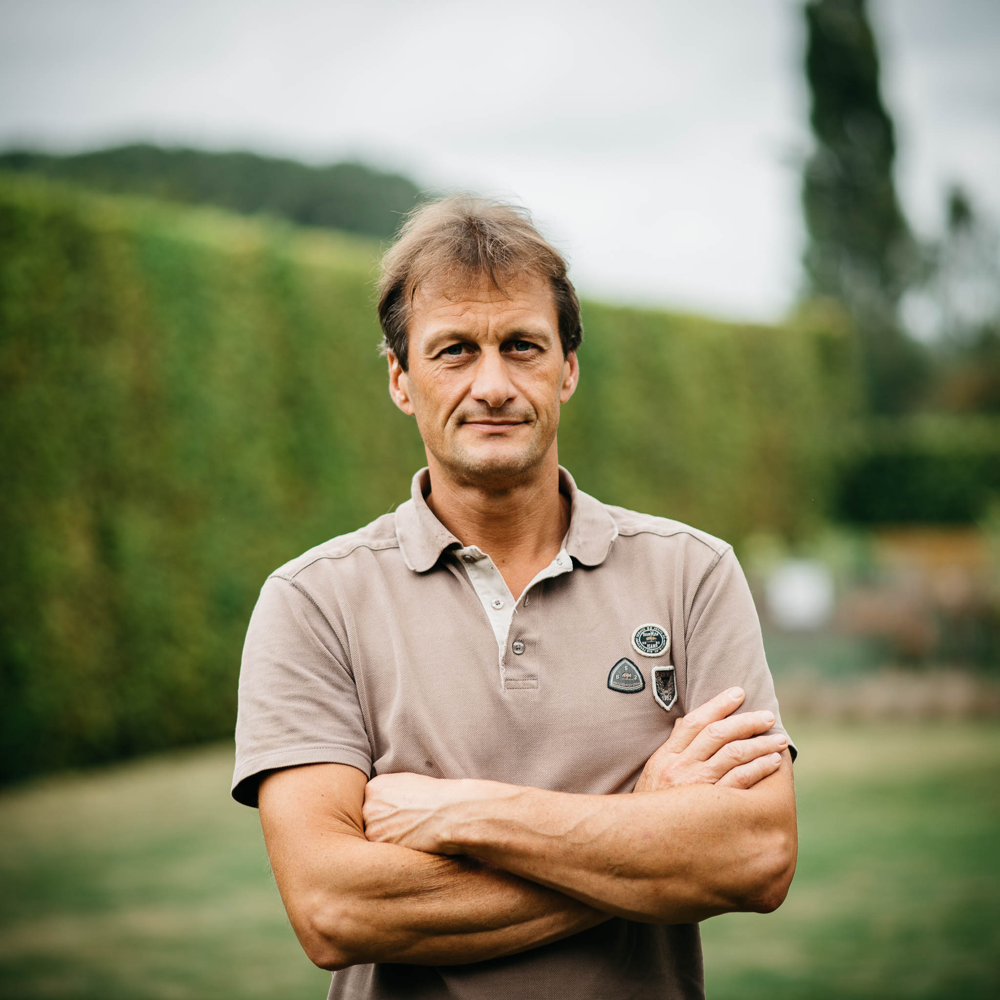

Pieter Taelman
Pieter Taelman
In 1991 behaalde ik samen met mijn vrouw het diploma van doctor in de Diergeneeskunde. Wij vestigden ons in Ronse, waar ik een zelfstandige praktijk begon voor landbouwhuisdieren en paarden. Na een loopbaan van 25 jaar, besloot ik een punt te zetten achter het beroep van practicus en werd in 2016 Technical Consultant Ruminants bij Elanco.
